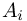

Simulate with complex geometries and complex physics
%CUMU_SMOOTH_AreaBased%
smooth monitor items along the boundary in every time step
This feature should be used when smoothing of area based physical quantities on boundary elements is desired in every time step. In this case, the integral over the boundary before and after smoothing will be the same.
 .
We define a distribution of from the boundary element (cell) to the cell
.
We define a distribution of from the boundary element (cell) to the cell  by
where
by
where
SAVE_BE_MONITOR_ITEM($itemName$) = ( %CUMU_SMOOTH_AreaBased%, Radius , WeightKernel , uValue , OPTIONAL: %CUMU_SMOOTH_StopAtEdges% )
- Radius -> allowed interaction radius
 between cells/boundary elements (see further down)
between cells/boundary elements (see further down)
- WeightKernel -> the coefficient for the weight kernel
 (see further down)
(see further down)
- uValue -> the cell function value on the boundary element (see further down)
- OPTIONAL: %CUMU_SMOOTH_StopAtEdges% -> smoothing should not go over secondary edges (given by the angle criterion COMP_CosEdgeAngle)
.
We define a distribution of from the boundary element (cell) to the cell by
where -  is the area of the i-th cell
- -> see WeightKernel
- -> see Radius
- is the centrer of gravity of the i-th cell
- The Radius is independent of the SmoothingLength in the simulation. It has to be chosen according to the characteristic length of the boundary elements, e.g. a multiple >1 of the edge length of triangles.
- The smoothed distribution can only be non-zero, if the cells and have a topological connection.
- uValue has to be a function/value on boundary elements, direct point cloud attributes can not be used. A mapping to the boundary elements by the creation of monitor points and a SAVE_BE_MONITOR_ITEM or BE_MONITOR_ITEM is necessary.
- Only function values on boundary element are smoothed. Thus, boundary elements with no corresponding monitor points, i.e. cumulation value of -999999, have to be treated properly.
SAVE_BE_MONITOR_ITEM($item_1$) = (%CUMU_SIMULATION%, [1/BEarea(1)], "number_of_monitor_points_created_per_area") # simply count the monitor points per area
SAVE_BE_MONITOR_ITEM($item_2$) = (%CUMU_SMOOTH_AreaBased%, 0.3, 3, equn{$EQ_smooth_1$}, "smoothed_number_of_monitor_points_area_based") # smooth out the area based number of monitor points
begin_equation{$EQ_smooth_1$}
if ( BEmon($item_1$) ! -999999 ) :: BEmon($item_1$)
else :: 0.0
endif
end_equation